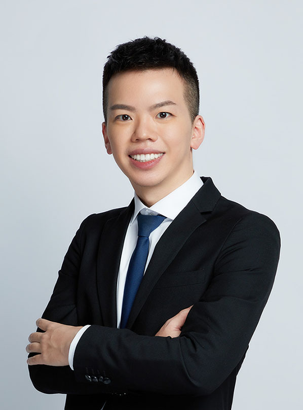
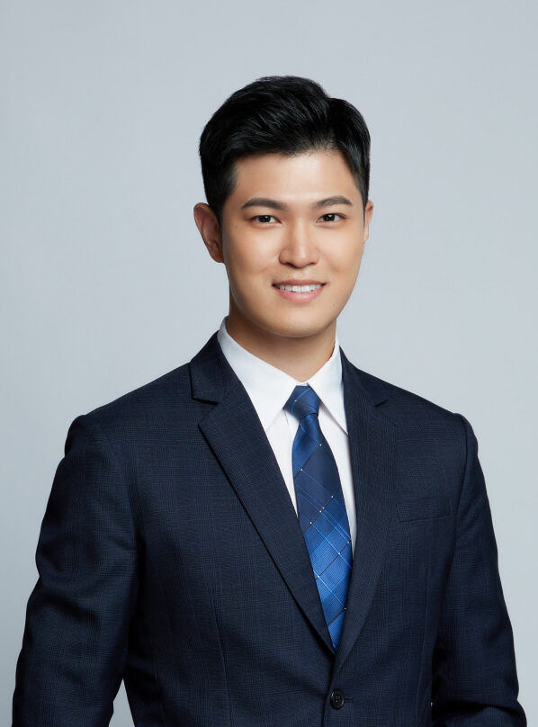

Managing Partner
Pohong Kuo
Pohong Kuo graduated from the National Taiwan University College of Law. He also holds a Master’s degree (LL.M.) from Ludwig-Maximilians-Universität München.
Pohong has served in a large domestic law firm and has experience in handling many significant domestic and foreign lawsuits and commercial cases, such as assisting in handling disputes over the management rights of public-stock financial institutions, providing legal compliance consulting for well-known foreign multinational companies, assisting domestic companies and state-owned enterprises in handling environmental protection-related administrative disputes, etc. Pohong also served as the Confidential Secretary of the President of the Judicial Yuan (Chief Justice of the Taiwan Constitutional Court), where he obtained rich practical experience in judicial administration and the operation of the Constitutional Court.
Pohong also has extensive knowledge outside the law. During his studies, he obtained the qualification for training pilots of an international airline. He was also admitted to the master's program of the Department of Music of National Taiwan Normal University (major in Orchestral Conducting). In addition, he passed the national exam for real estate brokers.
Besides general civil and criminal cases, Pohong specializes in appeals, administrative litigation, and dispute resolution in complex commercial matters.
Qualifications
- Admitted to Taiwan Bar Association (Specialty in Intellectual Property)
- Passed the National Exam for Real Estate Brokers
-
Practices
- General Civil, Criminal and Family Litigation
- Administrative Relief
- Constitutional Litigation
- Labor
- IP Rights Disputes
- Real Estate and Condominium Disputes
- Complex Commercial Disputes
-
Publications
- „Die Ehe für alle. Verfassungsrecht und Verfassungsentwicklung unter dem Grundgesetz“
- Constitutional Law and Constitutional Development of the Same-Sex Marriage under the German Basic Law
-
Education
- Ludwig-Maximilians-Universität München (LL.M.)
- National Taiwan University (LL.B.)
-
Experience
- Judicial Yuan, Confidential Secretary of the President (Chief Justice of the Constitutional Court)
- Formosa Transnational, Attorney-at-law
- Banyan Law, Attorney-at-law (Intern)
-
Language
- Mandarin
- English
- Deutsch (Level C1)

Partner
Muchen Lee
Muchen Lee graduated from the National Chung Hsing University College of Law and obtained a master's degree in law from National Taipei University with financial law as his research field.
Muchen has served in two law firms of the Big Four accounting firms. He has assisted domestic and foreign companies in investment mergers and acquisitions, legal due diligence, equity transactions, and asset transfers. He also provides legal advice on compliance with laws and regulations of listed companies, shareholders' meetings, commercial disputes, and the deliberation and drafting of various contracts.
Muchen has also assisted Taiwan Stock Exchange and Taiwan Depository & Clearing Corporation in implementing commercial law research projects and providing legal advice.
In addition to general civil and criminal cases, Muchen specializes in corporate legal consulting, M&A and legal due diligence, business contract review, and employee issues.
Qualifications
Admitted to Taiwan Bar Association
-
Practices
- General Civil, Criminal and Family Litigation
- Merger & acquisition and corporate law advisory
- Insurance and financial consumer litigation
- Drafting and reviewing contracts relating to company operations
- Employment law advisory and commercial litigation
-
Publications
- An Overview on Limited Partnership Regime－A Comparison with U.S. Uniform Limited Partnership Act
- Corporate Law (NEW SHARING CULTURE ENTERPRISE CO., LTD.)
-
Education
- National Taipei University (LL.M.)
- National Chung Hsing University (LL.B.)
-
Experience
- PwC Legal Taiwan, Attorney-at-law
- Guo Ju Law Firm, Attorney-at-law
- EY Taiwan, Attorney-at-law (Intern)
- Lee and Li, Attorneys-at-Law, Intern
- The Phi Tau Phi Scholastic Honor Society, Honorary Membership
-
Language
- Mandarin
- English
CPA Consultant
Yunfan Chen
Yunfan Chen graduated from the Department of Business Administration of National Taiwan University and obtained a master's degree in business administration from IESE Business School in Spain. She used to work in the Big Four accounting firm and has extensive experience with foreign insurance companies, commercial banks and start-up companies. Yunfan is now the Chief Accountant of Yunhe Accounting Firm and provides business registration, financial statement visa, bookkeeping and tax declaration, tax consulting and enterprise management consulting services.
-
Present
Yunhe Accounting Firm, Chief Accountant
-
Practices
- Business Registration
- Bookkeeping and Tax Declaration
- Financial Statement Attestation
- Financial Forecasting
- Family Wealth Inheritance Planning
- Business Management Consulting
-
Qualifications
Taiwan Certified Public Accountant
-
Education
- IESE Business School, MBA
- National Taiwan University, BBA
-
Experience
- Deloit Taiwan, Audit Department
-
Languages
- Mandarin
- English